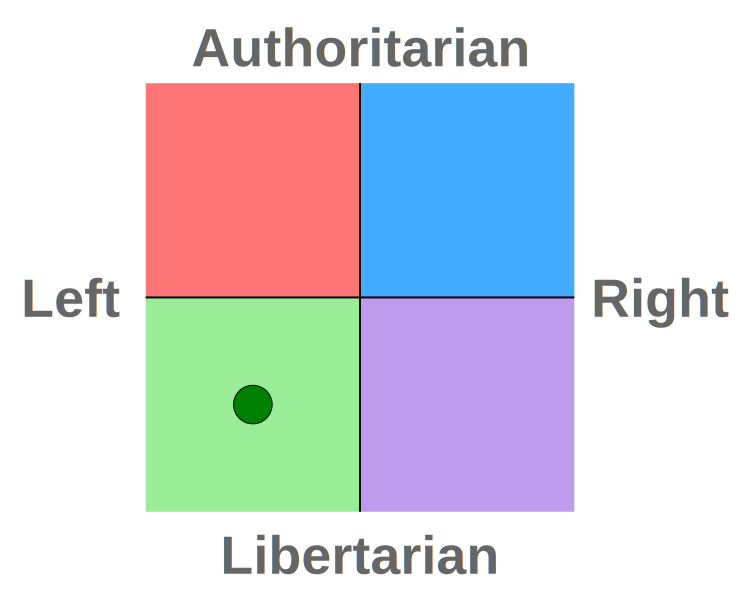

王子彦


你需要的是抽象。
硕士研究生
中山大学计算机学院
InplusLab
工作时间：周一至周五 09:30 – 22:30
地点：南实验楼 D203a
邮箱： wangzy75 AT mail2.sysu.edu.cn

最新消息
正在寻找博士生导师，2022 年秋季入学。如果您对我感兴趣，请联系我。 了解更多
简介
子彦是一名全栈开发者和研究者。
子彦致力于改善编程语言和开发工具，以简化人们学习编程的方式和开发者的工作方式。
编程语言：子彦致力于设计安全的通用语言和领域特定语言，这些语言具有良好的抽象、较高的开发效率和多样化的编程范式。子彦观察到，大部分的软件缺陷（即 bug 和安全漏洞）虽然看上去不过是代码里普通的错误，但可以追溯到语言中潜在、微妙的设计缺陷（例如[1][2]）。他认为精心设计的语言可以从根本上消除这些软件缺陷，远远早于开发者开始编写代码。
开发工具：子彦致力于提高用各种语言编写的程序的代码质量，他的方式是设计静态分析器、工具库和框架。静态程序分析能够检测潜在的 bug，提供可行的修复方案，并提高开发者的技术水平。他专注于基础技术，试图在分析的可靠性和完备性之间找到更好的平衡。
只有拥有良好的语言和工具，开发者才能发挥最大的才能。
| 参考资料 | |
| [1] | 空指针：十亿美元的错误 |
| [2] | Java 和 Scala 的类型系统并不可靠 |
研究兴趣
-
编程语言
- 静态程序分析
- 语言设计
- 编译器优化
- 运行时环境
-
软件工程
- 智能合约（区块链）
教育背景
经验
主要荣誉
- 华南师范大学百名优秀毕业生（入选率 < 2%），2019
- 连续两年华南师范大学一等奖学金（1.4%），2017 & 2018
- 亚太地区数学建模竞赛特等奖（0.1%），2018
- 蓝桥杯软件和信息技术专业人才大赛一等奖（0.3%），2018
- 凯通杯 Java 程序设计竞赛一等奖（0.1%），2017
开源项目

（GitHub 100+ 星，每月下载量约 3 万次，被微软采用）


论文
- （即将推出）
闲谈
- 智能合约安全科普，InplusLab 内部分享会，广州，2021 年 3 月 [幻灯片]
个人兴趣
- 语言学（人工语言，综合语）
- 心理学（发展心理学）
- 策略游戏（棋类，塔防）
- 轻音乐

编程语言
Java/C#, TypeScript/JavaScript, Python, Scala, Kotlin, Go, C/C++, Haskell, ...
语言
中文，英语，世界语，德语（基础知识）
点亮灯塔
子彦支持：
- 科学与工程领域的研究
- 促进社会公平的活动
子彦是世界公共网格计划的志愿者，通过科技解决疾病和可持续发展问题。